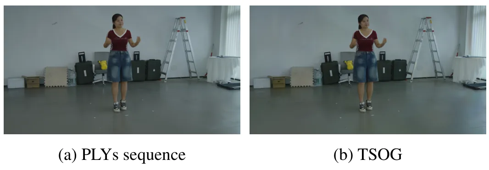
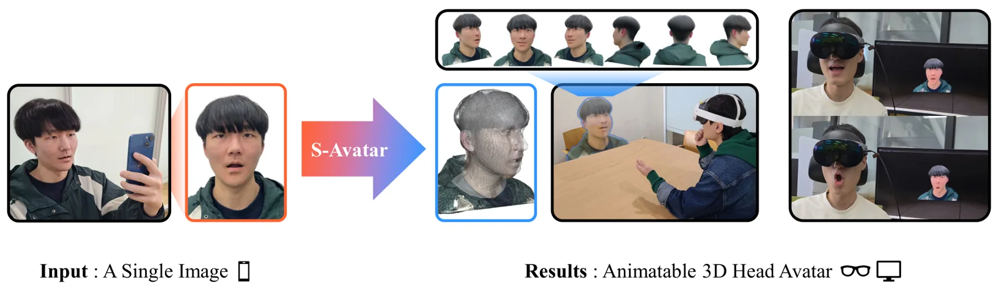
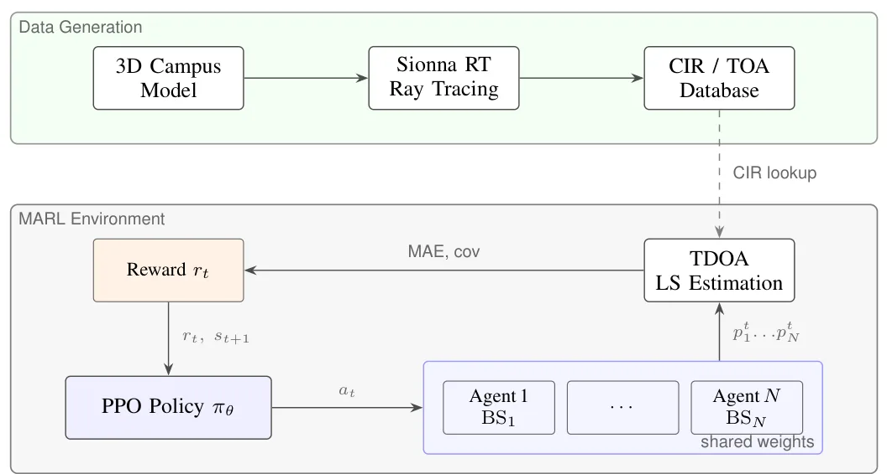
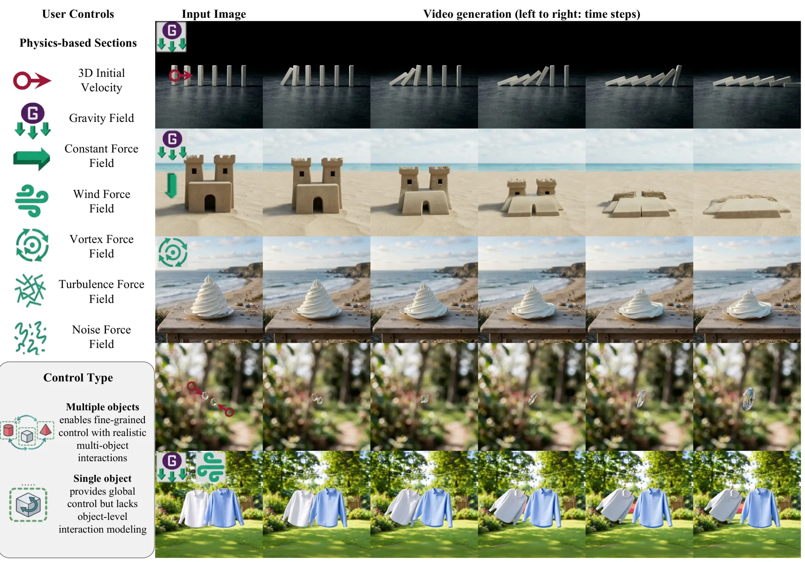

新论文 · 日期 2026-07-31 · score 10 · eess.IV, cs.CV, cs.GR
作者：Shady Gmira, Evangelos Alexiou, Emmanouil Potetsianakis, Emmanuel Thomas
评分 9.1/10
4DGS3DGS 压缩动态场景时空表示场景传输
一句话工作总结：以统一索引和时空参数化把动态 Gaussian 属性编码成图像数据，实现超过 90% 的 4DGS 文件压缩。
TSOG 将 Spatially Ordered Gaussians（SOG）扩展到时间域，为 4D Gaussian Splatting 引入 timeline 属性，以及几何和外观属性的时间参数化。每个 Gaussian 被赋予唯一索引，属性值编码为与索引对齐的图像数据。该有损格式与具体 4DGS 模型解耦，同时兼容离散和连续动态表示。基于 PLY 序列与 FreeTimeGS 的实验显示，文件体积缩减超过 9…
We propose Temporally and Spatially Ordered Gaussians (TSOG), a format for efficient representation of 4D Gaussian Splatting (4DGS) content. TSOG extends the Spatially Ordered Gaussians (SOG) framework to the…

新论文 · 日期 2026-07-31 · score 9 · cs.CV, cs.GR
作者：Hail Song, Seokhwan Yang, Jiwon Yang, Woojin Cho, Woontack Woo
评分 8.2/10
单图重建3DGSFLAME虚拟人实时渲染
一句话工作总结：把单图扩散生成的 3DGS 与 FLAME 对齐并绑定，实现可实时变形、视角一致性更好的头部虚拟人。
S-Avatar 从单张图像构建可实时驱动的 3D 头部虚拟人。流程先由 diffusion-based Gaussian generation module 合成高分辨率 3DGS，再通过优化参数和空间变换将 FLAME 参数化头模与 Gaussian 对齐，最后建立记录初始 splats 与 FLAME 空间关系的 binding template，使 3DGS 可随表情和姿态变化。作者称该方法在新视角和表情生…
We propose S-Avatar, a novel method for generating photorealistic 3D head avatars from a single image using a diffusion-guided 3D model generation module and strategies for animating 3D Gaussian Splatting (3DG…

新论文 · 日期 2026-07-31 · score 9 · eess.SP
作者：Bastian Perner, Pratik Gajanan Raut, Maximilian L\"ubke, Norman Franchi
评分 8.8/10
TDOA 定位NLOS多路径射线追踪基站布设
一句话工作总结：用三维场景 ray tracing 与多智能体 PPO 联合优化 TDOA 基站位置，把 NLOS 和多路径传播显式纳入布设。
该工作面向 5G/6G TDOA 定位中的基站布设，指出仅依赖 GDOP 的几何方法无法描述建筑引起的 NLOS 阴影、multipath 和 TOA bias。作者利用大学园区三维模型 ray tracing 生成 Channel Impulse Responses，并训练多个 PPO agents 协同放置基站，以定位精度和覆盖率构成共享奖励。五个园区分区的结果显示，平均 MAE 相对较强的 mean-opti…
Accurate localization of devices is a key capability for emerging 5G and 6G networks and depends on effective base station (BS) placement. Conventional geometry-based approaches such as Geometric Dilution of P…

新论文 · 日期 2026-07-31 · score 5 · cs.GR, cs.CV
作者：Xin Zhang, Yabo Chen, Yijie Fang, Wanying Qu, Haibin Huang, Chi Zhang, Feng Xu, Xuelong Li
评分 8/10
单图三维重建物理仿真多物体场景生成式视频实时交互
一句话工作总结：通过统一坐标系中的整体三维重建和仿真—渲染解耦，从单图生成可实时操控的多物体场景。
PhysOmni 是 training-free 的单图到物理可控视频框架，核心是先进行整体场景级三维重建，并将全部物体几何放入统一空间坐标系，以减少物体穿透和空间错位。该表示支持场景级多物体交互和更复杂的力学控制；通过将 simulation 与 rendering 解耦，系统可实时预览物理交互，再生成保持输入外观的写实视频。摘要称其在物理保真度、空间一致性和可控性方面优于已有方法。
Recent generative video models achieve impressive visual quality but remain constrained by limited physical consistency and controllability. Existing video generation methods provide minimal physical control,…

新论文 · 日期 2026-07-31 · score 4 · cs.CV, cs.GR
作者：Jinfan Zhou, Richard Liu, Itai Lang, Rana Hanocka
评分 8.3/10
三维基础特征二维蒸馏稠密对应网格三维理解
一句话工作总结：从二维基础模型蒸馏三维 feature field，再以前馈网络直接预测，可零三维标注服务对应、分割和网格变形。
MeshFM 将视觉 foundation models 的二维特征蒸馏到三维输入。第一阶段仅凭多视图二维特征监督优化三维 feature field，第二阶段训练 feedforward network 直接回归该特征场，从而在推理时无需逐对象优化或三维标注。所学特征可直接用于部件分割、稠密对应和 mesh deformation；作者称其性能可达到显式三维监督方法的水平，并对输入物体的极端旋转保持鲁棒。
We present MeshFM, an efficient feedforward framework for extracting rich features from 3D inputs. Our method distills 2D features from visual foundation models into 3D. We train a feedforward network to direc…
新论文 · 日期 2026-07-31 · score 3 · eess.SP
作者：Fenghao Zheng, Fuhai Wang, Zihan Jin, Gui Zhou, Robert Caiming Qiu, Zenan Ling
评分 8.1/10
DoA 估计RIS虚拟孔径多路径抑制无线定位
一句话工作总结：以四角稀疏子阵列重建虚拟孔径场，并用偏差不变损失抑制硬件失真和多路径，实现低硬件成本二维 DoA。
V-RIS 以四个角部子阵列和单天线接收机重建完整虚拟孔径表面场，再在该场上执行二维 DoA estimation，以降低大孔径 RIS 的硬件和控制成本。方法利用远场照射下离散表面场沿两个孔径轴满足有限阶空间递推的性质，同时约束 RIS-coded observations 的数据一致性和传播一致性，并采用 bias-invariant receiver-domain loss 抑制准静态硬件失真及配置不变的 m…
Large-aperture reconfigurable intelligent surfaces (RISs) enable high-resolution 2D direction-of-arrival (DoA) estimation, but existing approaches still tie hardware cost and control overhead to aperture size.…